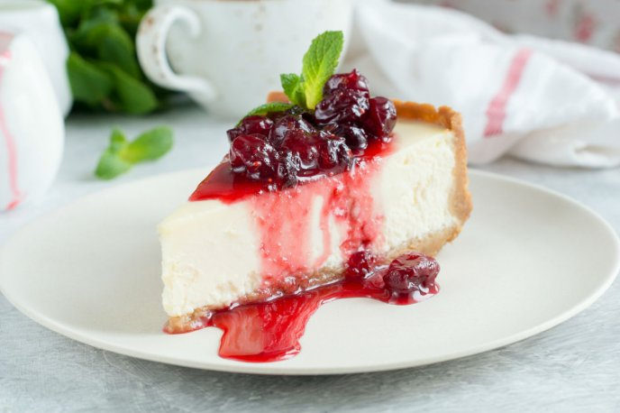

Recetas
Cheesecake
Ingredientes
- Galletitas dulces 150g.
- Manteca 80g.
- Port salut untable clásico 200g.
- Crema de leche 350cc.
- Azúcar 250g.
- Ralladura de limón ½ unidad
- Esencia de Vainilla ½ cdita.
- Gelatina sin sabor 14g.
- Agua 70cc.
- Mermelada de Frutos Rojos 150 g.

Preparación
- Procesa las galletitas dulces junto con la manteca fría hasta obtener un granulado que será la base del cheesecake.
- En un molde (preferiblemente desmontable) coloca las galletitas trituradas, aplástalas bien para que se compacten y luego llévalas a la heladera para que se endurezcan.
- En un bol mezcla el queso con la crema fría y el azúcar. Añadí la ralladura de limón y la Esencia de Vainilla.
- Disolvé la gelatina en agua fría, llévala a hervor (también podés ponerla unos segundos en el microondas) y luego incorpórala a la mezcla del queso y la crema. Integra bien la gelatina para que luego se solidifique en forma pareja.
- Volcá la preparación sobre la base de galletitas y llévala nuevamente a la heladera hasta que solidifique, mínimo 3 horas, pasado ese tiempo ya podés desmoldarlo (lo ideal es hacerlo de un día para el otro).
- Por otro lado, colocá la mermelada de frutos rojos con agua en una sartén, llévala a fuego medio y mezcla hasta lograr una salsa espesa. Déjala enfriar y disponela sobre la superficie del cheesecake. Lleva todo nuevamente a la heladera hasta el momento de servir.